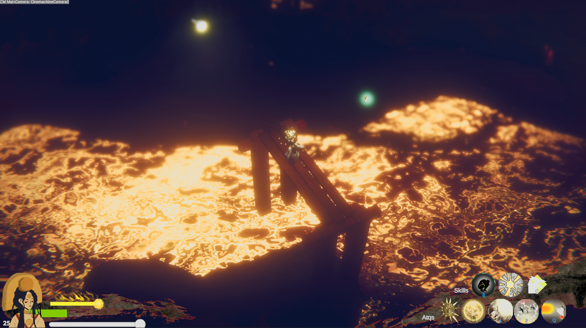
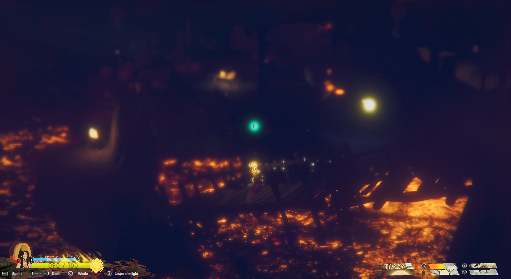
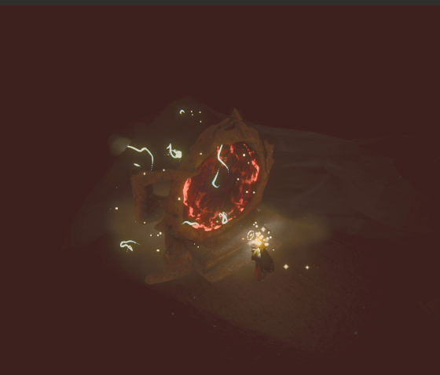

ENTRY 03
Building the cavern hub
Why a horror game needs somewhere warm to come home to.
The sun goddess descends into the underworld — not for glory, but to bring home the pets she once wronged.
You are Amaterasu, the Japanese sun goddess. Long ago, you mistreated the animals you were meant to cherish — and one by one, they were cast into the Buddhist underworld.
Circumstances leave you no choice: you must descend into the realms of shadow and bring every one of them home. Each descent takes you deeper into a hell built from your own regrets — and each pet you face remembers more than you do.
But between descents, a cavern hub offers a rare mercy: a place to unwind, breathe, and simply converse with your animals. Redemption, here, is not a single act — it is a slow, stubborn conversation.
What awaits between the light and the dark.
Explore layered Buddhist underworlds, each with its own horrors, rituals, and quiet wrongs to make right.
Every animal you once mistreated is waiting. Some remember you fondly. Some remember everything else.
Between descents, unwind in a warm cavern and simply talk with your animals. Calm is part of the journey.
Carry the sun's radiance into places it was never meant to reach — as a tool, a weapon, and a confession.
Placeholders for now — drop your real screenshots in when ready.



Follow the making of the game — replace these with links to your real posts.
Why a horror game needs somewhere warm to come home to.
Mapping the Buddhist underworld into playable, explorable spaces.
The pitch: a sun goddess, her mistreated pets, and one long apology.
The game is in ongoing development. Wishlist, follow, or grab the latest build below.